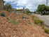

2017 Newsletters
If you would like to receive North Head Sanctuary Foundation newsletters via your email, just ask to be put on the mailing list by contacting:
northhead@fastmail.com.au
January/February 2017
Next meeting March 1 at 7pm will feature local residents; bushwalks led by NHSF for various groups; Native Plant Nursery progress; Rainfall monitoring on North Head; Third Cemetery - consumption claimed 2 lives in 1919; Making crystals an unusual way.

New bush regeneration site
March 2017
March 1 Meeting 7pm in Building 20 - several walking and bush related videos; New bush regeration site; North Fort Road; The other obelisk; Missing headstone found!

Yellow-faced whip snake
April 2017
Cats and dogs - threats on North Head; Yellow-faced whip snake; Third Cemetery - more about Jean Baptiste Adonis; Stone masons at work repairing grave stones.

Austracantha minax spider
May 2017
Datura stramonium - nasty weed; Austracantha minax - a spider; Third Cemetery - Margaret Whitehead; John Baptist Adonis’ grave marker is now upright

Pygmy Possum
June 2017
General Meeting - 2pm June 10th in Building 20 - guest speaker, Helen Vickers; Nursery people work on the Oval; Walk and Talk - Sunday June 18; Eastern Pygmy Possums back on North Head; Strangled! - the demise of a seedling Eucalyptus camfieldii; Third Cemetery - deaths from smallpox in 1913.

Tawny Frogmouth
July 2017
Annual General Meeting - September 16 - 2pm in Building 20 Speaker Jennifer Anson - Topic Re-introductions on North Head; Education Room; Finding a Tawny Frogmouth; Native Plant Nursery; Third Cemetery - in pursuit of the missing headstones

2015 / 2017 Planted area near old gym
August 2017
Nursery group's planting outside the old gymnasium - March 2015 and now (July 2017); Spring Wildflower walks - September and October; Hazard reduction burns planned for North Head; Third cemetery - Ellie George; Keeping count of people visiting North Head.
September 2017
Annual General Meeting at 2pm on September 16 - Guest speaker will be Jennifer Anson speaking about "Possums, rodents, bandicoots and dasyurids: Fauna Restoration at North Head Sanctuary"; Thank you Aunty Fran; Spring Wildflower walks; ESBS - changes to the list of species recognised to be endemic to this classification; Third Cemetery - Richard Perry died at North Head but was buried in the Necropolis at Rookwood Cemetery.
October 2017
Thank you to Jennifer Anson for a fascinating talk; Cleanup of Pond area; Spring Wildflower walks; After a fire; Third Cemetery - path paved; SS Atua and influenza

Spring Wildflower Walk
November 2017
General Meeting November 25 2pm - speakers Vince and Julia Williams; Ocean Care Day - 3rd December; North Head Project - 8th Dec, 2017 to 18th Feb, 2018 - showcasing the work of 10 artists who are depicting aspects of North Head; North Head Discovery Day - Sun 21 January 2018, 10am – 4pm; more buses for North Head on Sundays and public holidays; Spring Wildflower Walks; airport for North Head?; Third Cemetery - Influenza

Army truck
December 2017
North Head Discovery Day - January 21, 2018; Tears at North Fort; The naming of species; The UAV vegetation survey of North Head; Third Cemetery - rum and innoculation